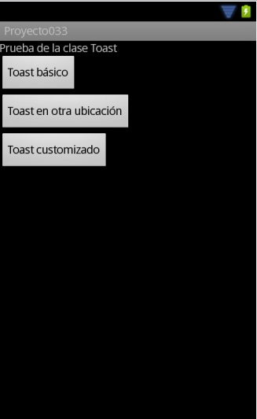
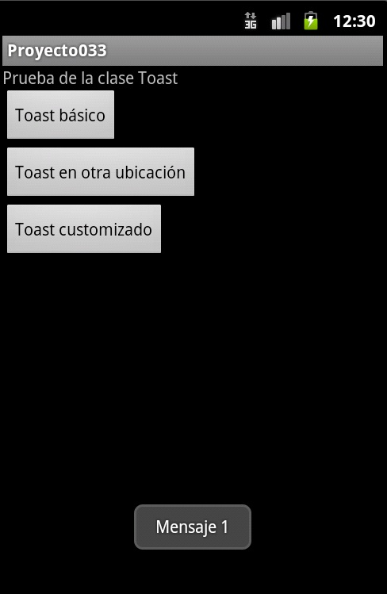
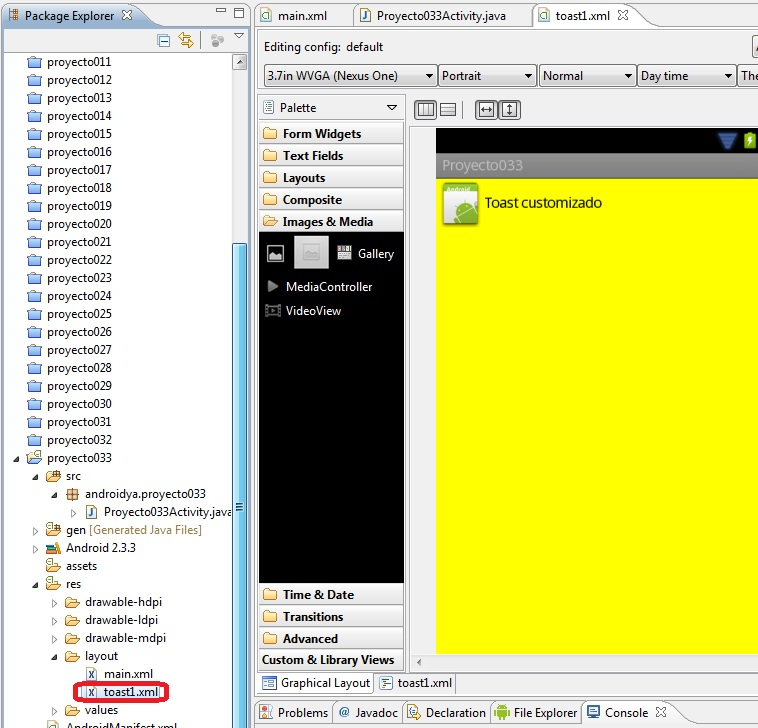
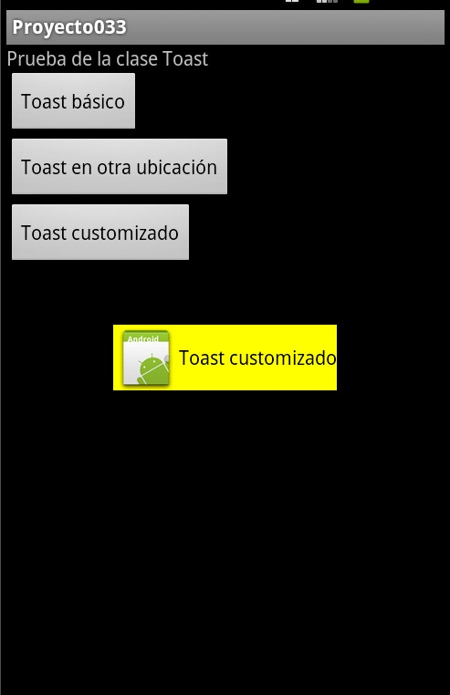

La clase Toast nos permite mostrar un mensaje superpuesto a la ventana por un período de tiempo pero sin congelar la aplicación. Este mensaje no permite interactuar con el usuario (no se pueden ingresar datos, seleccionar botones ni obligar a que se cierre)
Eventualmente se lo puede localizar en distintas partes del dispositivo.
Problema:
Confeccionar una aplicación que muestre una serie de botones y active mensajes de notificaciones con la clase Toast.
Primero creamos un proyecto llamado: proyecto033
Lo almacenamos en el paquete: androidya.proyecto033
La interfaz visual a implementar son tres botones:
No olvidemos inicializar la propiedad On Click de cada botón con los métodos: prueba1, prueba2 y prueba3.
El código fuente de la aplicación queda como sigue:
package androidya.proyecto033;
import android.app.Activity;
import android.os.Bundle;
import android.view.Gravity;
import android.view.LayoutInflater;
import android.view.View;
import android.widget.Toast;
public class Proyecto033Activity extends Activity {
/** Called when the activity is first created. */
@Override
public void onCreate(Bundle savedInstanceState) {
super.onCreate(savedInstanceState);
setContentView(R.layout.main);
}
public void prueba1(View v) {
Toast toast = Toast.makeText(this, "Mensaje 1", Toast.LENGTH_SHORT);
toast.show();
}
public void prueba2(View v) {
Toast toast = Toast.makeText(this, "Mensaje 2", Toast.LENGTH_SHORT);
toast.setGravity(Gravity.CENTER_VERTICAL, 0, 0);
toast.show();
}
public void prueba3(View v) {
LayoutInflater inflater = getLayoutInflater();
View layout = inflater.inflate(R.layout.toast1, null);
Toast toast = new Toast(getApplicationContext());
toast.setGravity(Gravity.CENTER_VERTICAL, 0, 0);
toast.setDuration(Toast.LENGTH_LONG);
toast.setView(layout);
toast.show();
}
}
Para el evento click del primer botón mostramos el mensaje con las estructura más simple que nos provee la clase Toast. Definimos un objeto de la clase Toast y llamamos al método makeText pasando como parámetro la referencia del Activity, el mensaje a mostrar y una constante indicando si queremos que el mensaje aparezca por un período corto o largo de tiempo en la pantalla. Por último llamamos al método show para que se muestre el mensaje:
public void prueba1(View v) {
Toast toast = Toast.makeText(this, "Mensaje 1", Toast.LENGTH_SHORT);
toast.show();
}
Si queremos ubicar en otra parte de la pantalla debemos llamar al método setGravity e indicar en el primer parámetro una constante (en este ejemplo lo centramos verticalmente)
En el segundo y tercer parámetro de setGravity podemos desplazarlo una cantidad de píxeles hacia derecha o izquierda, arriba o abajo según indiquemos valores positivos o negativos.
Luego el método completo para este segundo Toast es:
public void prueba2(View v) {
Toast toast = Toast.makeText(this, "Mensaje 2", Toast.LENGTH_SHORT);
toast.setGravity(Gravity.CENTER_VERTICAL, 0, 0);
toast.show();
}

Para generar un Toast customizado debemos crear un archivo XML donde creamos visualmente los controles a mostrar, en este ejemplo creamos el siguiente archivo (crear un archivo llamado toast1.xml):
Este recurso luego lo incorporamos en el Toast mediante el siguiente código:
public void prueba3(View v) {
LayoutInflater inflater = getLayoutInflater();
View layout = inflater.inflate(R.layout.toast1,null);
Toast toast = new Toast(getApplicationContext());
toast.setGravity(Gravity.CENTER_VERTICAL, 0, 0);
toast.setDuration(Toast.LENGTH_LONG);
toast.setView(layout);
toast.show();
}
Mediante la clase LayoutInflate procedemos a leer el contenido del archivo XML creado anteriormente y lo enlazamos con el toast mediante el método:
toast.setView(layout);
En pantalla luego el Toast customizado aparece de la siguiente forma:
Este proyecto lo puede descargar en un zip desde este enlace: proyecto033.zip